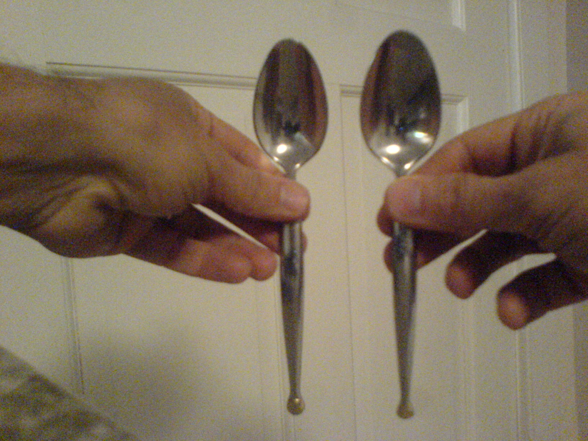

If you design a new series of objects, you’ll think first of shape – of form. That’s where your design will make a difference, that’s your signature. Design is first and foremost a way to create new forms, or so it seems. Other properties of objects may then be just taken for granted. Size is one of them. Sure enough, you won’t design a 3m wide spoon, or try to market a 50cm long car. The measures of the human body are obvious constraints, and they end up in an invisible background you never think about. However, size does matter for other reasons. In particular, size interacts with shape in perspective. And perspective is as ubiquitous a constraint as are bodily measures. Everything is seen from a viewpoint, in perspective.
Consider objects with similar shape and different sizes. Spoons come in different sorts: tablespoons and teaspoons, among others. When you design a cutlery set, you have to modulate the size of spoons according to usage. You may actually decide to object to the distinction between tablespoon and teaspoon. After all, tradition plays an important role in determining those sizes, and if you may have some difficulties in using a teaspoon for a large bowl of soup, there is nothing wrong in using a tablespoon for the fruit salad or the coffee – it just does not feel nice.
However, if you do think that you need two sizes, you’d better make sure that the difference in size is perceivable. This is what the designer of a particular set did not do.
 Sorting spoons by size, a daily task. Size interacts with perspective. Image credit: RC.In this particular set, tablespoon and teaspoon are so close in size, they are hard to tell from each other in many circumstances, even when we hold them in our hands. Size interacts with perspective when the size range is too narrow.
There is more to usability than just use, and there is more to use than just function. The function of a tablespoon is to help you lifting partly liquid stuff without touching it and delivering it to your mouth, and is accomplished by the graspability of the handle and the suitable convexity of the bowl. But in order to use it you need to be able to recognize it. And this recognitional task, this sorting out, is accomplished many times a day, each day of the year. Design is a global conception of an object in many different circumstances, and at least an open-ended approach to our interactions with the object is necessary.